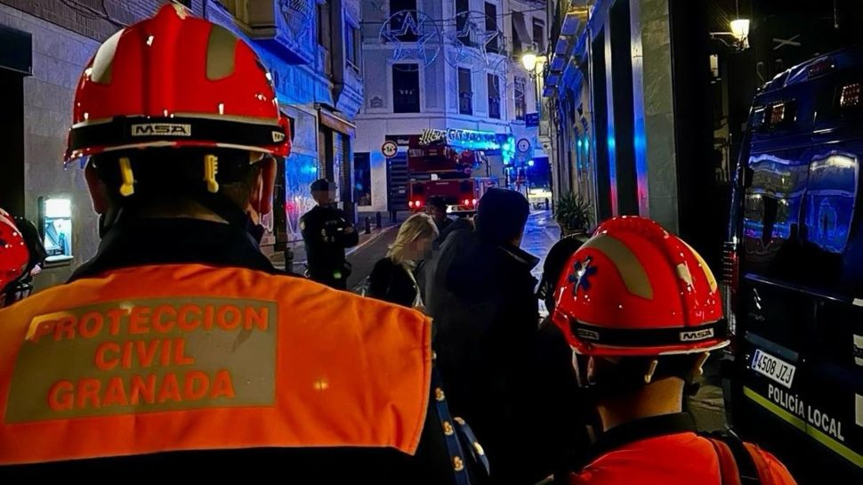

La 'unidad B' del Granada brinda por su ocasión en la Copa del Rey
El equipo se enfrenta al Arosa, de 3ª RFEF, en su estreno en el torneo, un banco de pruebas para los que menos minutos juegan

El Granada afronta la primera ronda de Copa obligado a ganar para evitar más problemas de los que ya tiene. Hundido en la tabla y preso de una debilidad defensiva impropia de un equipo de primer nivel, el conjunto nazarí espera aprovechar la visita al modesto Arosa, actualmente undécimo clasificado en el grupo 1 de Tercera RFEF, para frenar la pésima racha de resultados que arrastra .
El 112 gestiona 318 emergencias en Granada durante el 31 y la noche de Halloween
La cifra supone un 14,74% menos de incidencias con respecto al mismo periodo del año pasado

Emergencias 112 Andalucía ha coordinado 318 incidencias en la provincia de Granada desde las 00.00 horas del día 31 de octubre y las 07.00 horas de este miércoles, lo que supone un 14,74% menos con respecto a mismo periodo del año anterior, cuando se coordinaron 373 incidencias. Las incidencias producidas en la provincia granadina son un 12% del total de las registradas en toda Andalucía, que han sido 2.645.